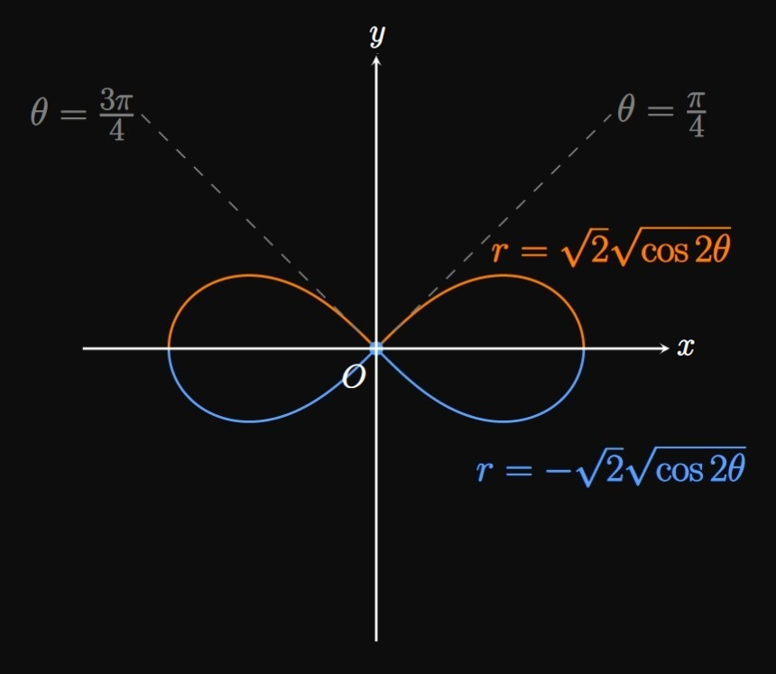

calculate the area of the region enclosed by the polar curve.
SOLUTION
The entire cardioid is fully traced out once over \(0 \leq \theta \leq 2 \pi,\)
so the area is given by
\[
A = \tfrac{1}{2} \int_0^{2 \pi} \par{2 - 2 \cos \theta}^2 \di \theta
= \boxed{6 \pi} \approx 18.850 \pd
\]
EXERCISE 2
For
\[r = 4 + \sin \theta\]
calculate the area of the region enclosed by the polar curve.
SOLUTION
Since this limacon is traced out entirely over \(0 \leq \theta \leq 2 \pi,\)
the area is given by
\[
A = \tfrac{1}{2} \int_0^{2 \pi} \par{4 + \sin \theta}^2 \di \theta
= \boxed{\frac{33 \pi}{2}} \approx 51.836 \pd
\]
EXERCISE 3
For
\[r = 3\]
calculate the area of the region enclosed by the polar curve.
SOLUTION
This polar graph is a circle of radius \(3.\)
By geometry, its area is simply \(\pi(3)^2 = \boxed{9 \pi}.\)
Alternatively, an integral setup would also show
\[A = \tfrac{1}{2} \int_0^{2 \pi} 3^2 \di \theta = 9 \pi \approx 28.274 \pd\]
EXERCISE 4
For
\[r = 4 \cos \theta\]
calculate the area of the region enclosed by the polar curve.
SOLUTION
The graph of \(r = 4 \cos \theta\) is a circle of radius \(4\)
centered on the positive \(x\)-axis.
By geometry, its area is simply \(\pi(4)^2 = \boxed{16 \pi}.\)
Alternatively, an integral setup would show
\[A = \tfrac{1}{2} \int_0^{2 \pi} (4 \cos \theta)^2 \di \theta = 16 \pi \approx 50.265 \pd\]
calculate the area of the region enclosed by the polar curve.
SOLUTION
The region enclosed by the limacon \(r = 3 + \cos \theta\)
from \(\theta = \pi/2\) to \(\theta = \pi\)
is in the second quadrant. Using the given bounds, we find the area to be
\[
\ba
A &= \tfrac{1}{2} \int_{\pi/2}^\pi \par{3 + \cos \theta}^2 \di \theta \nl
&= \boxed{\frac{19 \pi}{8} - 3} \approx 4.461 \pd
\ea
\]
calculate the area of the region enclosed by the polar curve.
SOLUTION
The region enclosed by the polar curve \(r = 4 \sqrt \theta\)
from \(\theta = 0\) to \(\theta = \pi/2\)
is in the first quadrant. Using the given bounds, we find that its area is
\[
\ba
A &= \tfrac{1}{2} \int_0^{\pi/2} \par{4 \sqrt \theta}^2 \di \theta \nl
&= \boxed{\pi^2} \approx 9.870 \pd
\ea
\]
EXERCISE 7
For
\[\ds r^2 = 2 \cos 2 \theta\]
calculate the area of the region enclosed by the polar curve.
SOLUTION

The graph of \(r^2 = 2 \cos 2 \theta\) is a lemniscate
(an \(\infty\)-shaped curve),
which we can break into
\[r = \sqrt{2} \sqrt{\cos 2 \theta} \and r = - \sqrt{2} \sqrt{\cos 2 \theta} \pd\]
The former equation gives the top half of the lemniscate, while the
latter equation traces out the bottom half.
(We graphed this curve in Section 9.3.)
Using symmetry enables us to take the area of the region in the first quadrant—formed by
\(r = \sqrt{2} \sqrt{\cos 2 \theta}\) in the first quadrant—and multiply it by \(4.\)
The graph touches the pole when
\[\sqrt{2} \sqrt{\cos 2 \theta} = 0 \implies \theta = \frac{\pi}{4} \cma\]
meaning the portion in the first quadrant is traced over \(0 \leq \theta \leq \pi/4.\)
We therefore use the bounds \(\alpha = 0\) to \(\beta = \pi/4.\)
The area bounded in the first quadrant is therefore
\[
\ba
A_1 &= \tfrac{1}{2} \int_0^{\pi/4} \par{\sqrt{2} \sqrt{\cos 2 \theta}}^2 \di \theta \nl
&= \int_0^{\pi/4} \cos 2 \theta \di \theta \nl
&= \tfrac{1}{2} \sin 2 \theta \intEval_0^{\pi/4}
= \tfrac{1}{2} \pd
\ea
\]
So the entire area bounded by the lemniscate is
\[A = 4A_1 = \boxed 2\]
EXERCISE 8
Use polar integration to show that a circle of radius \(k\) has area \(\pi k^2.\)
SOLUTION
In polar coordinates, the equation of a circle of radius \(k\) is \(r = k.\)
Using polar integration, we see
\[
\ba
A &= \tfrac{1}{2} \int_0^{2 \pi} (k)^2 \di \theta \nl
&= \tfrac{1}{2} (k^2) \theta \intEval_0^{2 \pi} = \pi k^2 \cma
\ea
\]
as requested.
EXERCISE 9
Find the area of one petal of the rose \(r = \sin 2 \theta.\)
SOLUTION
The graph of \(r = \sin 2 \theta\) has four petals.
(Recall that the graph of \(r = \sin n \theta\) has \(n\) petals
if \(n\) is odd but \(2n\) petals if \(n\) is even.)
Let's calculate the area of the petal in the first quadrant.
We locate the values of \(\theta\) at which the graph touches the pole by equating \(r = 0.\)
The solutions to \(\sin 2 \theta = 0\)
for \(0 \leq \theta \leq \pi/2\) are \(\theta = 0\) and \(\theta = \pi/2.\)
So the area of the petal is given by
\[A = \tfrac{1}{2} \int_0^{\pi/2} \par{\sin 2 \theta}^2 \di \theta = \boxed{\frac{\pi}{8}} \approx 0.393 \pd\]
EXERCISE 10
Find the area of one petal of the rose \(r = 2 \cos 3 \theta.\)
SOLUTION
The graph of \(r = 2 \cos 3 \theta\) has three petals.
(Recall that the graph of \(r = \cos n \theta\) has \(n\) petals
if \(n\) is odd but \(2n\) petals if \(n\) is even.)
Let's calculate the area of the petal that lies on the positive \(x\)-axis.
We locate the values of \(\theta\) at which the graph touches the pole by equating \(r = 0.\)
The solutions to \(2 \cos 3 \theta = 0\)
for \(-\pi/2 \leq \theta \leq \pi/2\) are \(\theta = -\pi/3\) and \(\theta = \pi/3.\)
Accordingly, the area of the petal is given by
\[A = \tfrac{1}{2} \int_{-\pi/3}^{\pi/3} \par{2 \cos 3 \theta}^2 \di \theta \pd \]
It is easier to evaluate this integral by exploiting symmetry, from which we get
\[
\ba
A &= 2 \cdot \tfrac{1}{2} \int_0^{\pi/3} \par{2 \cos 3 \theta}^2 \di \theta \nl
&= \boxed{\frac{2\pi}{3}} \approx 2.094 \pd
\ea
\]
EXERCISE 11
Determine the area enclosed by the inner loop of the limacon \(r = 2 - 4\sin \theta.\)
SOLUTION
To determine the interval of \(\theta\) over which the inner loop is traced,
we find the values of \(\theta\) at which the limacon touches the pole.
Equating \(r = 0\) and solve for \(\theta,\) we see
\[r = 2 - 4 \sin \theta = 0 \iffArrow \sin \theta = \tfrac{1}{2} \iffArrow \theta = \frac{\pi}{6} \cma \frac{5 \pi}{6} \pd\]
Accordingly, the inner loop is traced out over \(\pi/6 \leq \theta \leq 5 \pi/6.\)
We therefore integrate using these endpoints as the lower and upper bounds, respectively.
Doing so, we see
\[
\ba
A &= \tfrac{1}{2} \int_{\pi/6}^{5 \pi/6} \par{2 - 4\sin \theta}^2 \di \theta \nl
&= \boxed{4 \pi - 6 \sqrt 3} \approx 2.174 \pd
\ea
\]
EXERCISE 12
Determine the area enclosed by the inner loop of the limacon \(r = 1 + 2 \cos \theta.\)
SOLUTION
In determining the interval of \(\theta\) over which the inner loop is traced,
we find the values of \(\theta\) at which the limacon touches the pole.
Equating \(r = 0\) and solve for \(\theta,\) we see
\[r = 1 + 2 \cos \theta = 0 \iffArrow \cos \theta = -\tfrac{1}{2}
\iffArrow \theta = \frac{2\pi}{3} \cma \frac{4 \pi}{3} \pd\]
Accordingly, the inner loop is traced out over \(2\pi/3 \leq \theta \leq 4 \pi/3.\)
We therefore integrate using these endpoints as the lower and upper bounds, respectively.
Doing so, we see
\[
\ba
A &= \tfrac{1}{2} \int_{2 \pi/3}^{4 \pi/3} \par{1 + 2 \cos \theta}^2 \di \theta \nl
&= \boxed{\pi - \frac{3\sqrt 3}{2}} \approx 0.544 \pd
\ea
\]
EXERCISE 13
Calculate the total area of all the regions bounded
between the polar roses \(r = \cos 3 \theta\) and \(r = 2 \cos 3 \theta.\)
SOLUTION
The graphs of \(r = \cos 3 \theta\) and \(r = 2 \cos 3 \theta\)
are roses with three petals.
So there are three total bounded regions;
in each, the outer boundary function is \(f(\theta) = 2 \cos 3 \theta\)
and the inner boundary function is \(g(\theta) = \cos 3 \theta.\)
By symmetry, we can find the area of one of these regions and multiply it by \(3.\)
Both graphs hit the origin at \(\theta = \pm \pi/6\) since \(r = 0,\)
so we use the bounds \(\alpha = -\pi/6\) and \(\beta = \pi/6\) to get
\[A_1 = \tfrac{1}{2} \int_{-\pi/6}^{\pi/6} \parbr{(2 \cos 3 \theta)^2 - (\cos 3 \theta)^2} \di \theta \pd\]
By symmetry, we can simplify the calculation as follows:
\[
\ba
A_1 &= 2 \cdot \tfrac{1}{2} \int_0^{\pi/6} \parbr{(2 \cos 3 \theta)^2 - (\cos 3 \theta)^2} \di \theta \nl
&= \int_0^{\pi/6} \parbr{(2 \cos 3 \theta)^2 - (\cos 3 \theta)^2} \di \theta \nl
&= \frac{\pi}{4} \pd
\ea
\]
Thus, the total area of all three bounded regions is
\[A = 3 A_1 = \boxed{\frac{3 \pi}{4}} \approx 2.356 \pd\]
EXERCISE 14
Calculate the total area of the regions that lie
outside the circle \(r = 2\)
and inside the rose \(r = 4 \sin 3 \theta.\)
SOLUTION
Three regions
lie outside the circle \(r = 2\) and also inside the rose \(r = 4 \sin 3 \theta.\)
In each region, the outer boundary function is the rose \(f(\theta) = 4 \sin 3 \theta\)
and the inner boundary function is the circle \(g(\theta) = 2.\)
Due to symmetry, let's find the area of one of these regions.
The graphs intersect when
\[2 = 4 \sin 3 \theta \iffArrow \sin 3 \theta = \tfrac{1}{2} \iffArrow \theta = \frac{\pi}{18} \cma \frac{5 \pi}{18} \pd\]
Thus, we use the bounds \(\alpha = \pi/18\) and \(\beta = 5\pi/18\) to get
\[
\ba
A_1 &= \tfrac{1}{2} \int_{\pi/18}^{5\pi/18} \parbr{(4 \sin 3 \theta)^2 - (2)^2} \di \theta \nl
&= \frac{2}{\sqrt 3} + \frac{4 \pi}{9} \pd
\ea
\]
Thus, the total area of all three bounded regions is
\[A = 3 A_1 = \boxed{2 \sqrt 3 + \frac{4 \pi}{3}} \approx 7.653 \pd\]
EXERCISE 15
Find the area of the region
that is inside the circle \(r = 3\) and also outside the limacon \(r = 3 - \sin \theta.\)
SOLUTION
We imagine a ray rotating counterclockwise about the pole \(O\)
and sweeping out the enclosed region.
Observe the following:
Over \(0 \leq \theta \leq \pi,\)
the enclosed region is bounded only by the limacon \(r = 3 - \sin \theta.\)
Over \(\pi \leq \theta \leq 2 \pi,\)
the region is bounded solely by the circle \(r = 3.\)
The bottom half of the enclosed region is a semicircle of area \(\tfrac{1}{2} \pi(3)^2 = \tfrac{9}{2} \pi.\)
We add this result to the area of the top half of the enclosed area.
So the total area is given by
\[
\ba
A &= \tfrac{9}{2} \pi + \tfrac{1}{2} \int_0^\pi \par{3 - \sin \theta}^2 \di \theta \nl
&= \frac{9\pi}{2} + \frac{19 \pi}{4} - 6 = \boxed{\frac{37}{4} \pi - 6} \approx 23.060 \pd
\ea
\]
EXERCISE 16
Calculate the area bounded between the two circles \(r = \sqrt 3 \cos \theta\)
and \(r = \sin \theta.\)
SOLUTION
These circles intersect when \(\sqrt 3 \cos \theta = \sin \theta\)
\(\iffArrow \tan \theta = \sqrt 3,\)
which occurs in the first quadrant when \(\theta = \pi/3.\)
Starting at the origin, you can trace the perimeter of the enclosed region and imagine
a ray sweeping out this region.
We see the following:
Over \(0 \leq \theta \leq \pi/3,\)
the region is bounded by the circle \(r = \sin \theta.\)
Over \(\pi/3 \leq \theta \leq \pi/2,\)
the region is bounded by the other circle \(r = \sqrt 3 \cos \theta.\)
Since the boundary functions change at \(\theta = \pi/3,\)
we split the region at \(\theta = \pi/3\) and add the subregions' areas:
\[
\ba
A &= \tfrac{1}{2} \int_0^{\pi/3} (\sin \theta)^2 \di \theta
+ \tfrac{1}{2} \int_{\pi/3}^{\pi/2} \par{\sqrt 3 \cos \theta}^2 \di \theta \nl
&= \boxed{\frac{5 \pi}{24} - \frac{\sqrt 3}{4}} \approx 0.221 \pd
\ea
\]
EXERCISE 17
Calculate the area of the region bounded by the three circles \(r = 1,\)
\(r = 2 \cos \theta,\) and \(r = 2 \sin \theta.\)
SOLUTION
Let's calculate where the circle \(r = 1\) intersects the circles \(r = 2 \cos \theta\)
and \(r = 2 \sin \theta.\)
We see
\[
\baat{2}
2 \sin \theta &= 1 \implies \theta &&= \frac{\pi}{6} \cma \nl
2 \cos \theta &= 1 \implies \theta &&= \frac{\pi}{3} \pd
\eaat
\]
If we imagine a ray rotating clockwise about the origin, then we see
that the region is bounded by \(r = 2 \sin \theta\)
over \(0 \leq \theta \leq \pi/6,\)
bounded by \(r = 1\) over \(\pi/6 \leq \theta \leq \pi/3,\)
and bounded by \(r = 2 \cos \theta\) over \(\pi/3 \leq \theta \leq \pi/2.\)
So the area is given by the sum
\[
\ba
A &= \tfrac{1}{2} \int_0^{\pi/6} (2 \sin \theta)^2 \di \theta
+ \tfrac{1}{2} \int_{\pi/6}^{\pi/3} 1^2 \di \theta
+ \tfrac{1}{2} \int_{\pi/3}^{\pi/2} (2 \cos \theta)^2 \di \theta \nl
&= \boxed{\frac{\pi}{12} + \frac{2 \pi - 3 \sqrt 3}{6}} \approx 0.443 \pd
\ea
\]
EXERCISE 18
A particle travels counterclockwise along the cardioid \(r = 1 + \sin \theta,\)
where \(r\) is measured in inches,
with an angular speed of \(4\) radians per minute.
In square inches per minute, find the rate at which the particle sweeps out area with respect to the pole
when the particle is located \(\pi/6\) radians counterclockwise from
the positive \(x\)-axis.
SOLUTION
Let \(\theta = m\) be the line that connects the origin to the particle.
Since the particle travels counterclockwise with an angular speed of \(4\) radians per minute,
this is the rate at which \(m\) increases with time.
Mathematically, if \(t\) is time in minutes, then \(\textderiv{m}{t} = 4.\)
In addition, the rate at which the particle sweeps out area with respect to \(m\) is given by
\[\deriv{A}{m} = \deriv{}{m} \int_0^m \tfrac{1}{2} (1 + \sin \theta)^2 \di \theta \pd\]
By Part I of the Fundamental Theorem of Calculus
(see Section 4.3),
this equation becomes
\[\deriv{A}{m} = \tfrac{1}{2} (1 + \sin m)^2 \pd\]
We want \(\textderiv{A}{t}\) when \(m = \pi/6;\) by the Chain Rule, we have
\[\deriv{A}{t} = \deriv{A}{m} \deriv{m}{t} = 4 \cdot \tfrac{1}{2} (1 + \sin m)^2 = 2 (1 + \sin m)^2 \pd\]
(See Section 3.1
to review the procedure of working with related rates.)
Substituting \(m = \pi/6,\) we have
\[
\deriv{A}{t} \intEval_{m = \pi/6} = 2 \par{1 + \sin \frac{\pi}{6}}^2 \nl
= \boxed{\frac{9}{2} \un{in}^2/\un{min}}
\]